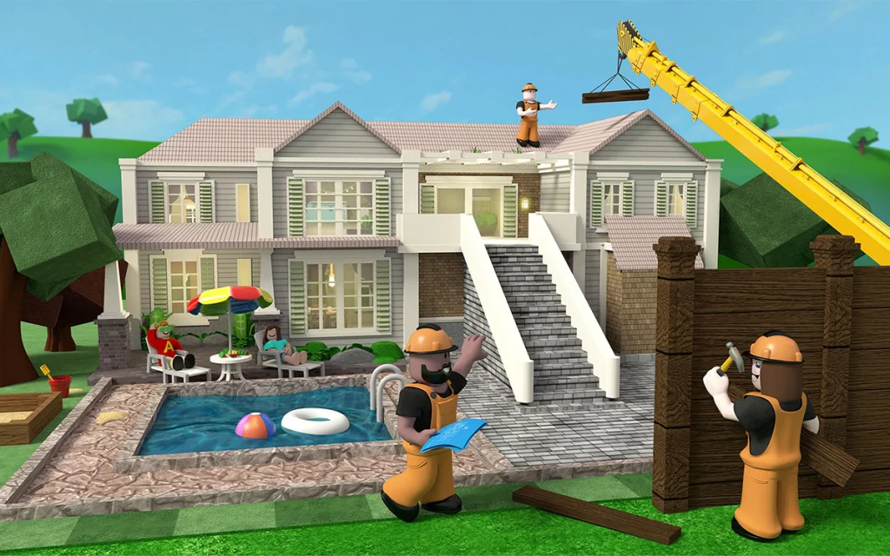

Originalmente de 2006 e com nome de DynaBlocks, Roblox é um título onde os jogadores podem criar… outros games. Lançado com princípio educacional, o jogo cresceu tanto que os desenvolvedores abandonaram essa ideia e abriram para qualquer criação de game. A franquia promove anualmente o Bloxy Awards, premiação in-game em que os players podem votar em categorias, conferir itens limitados e, principalmente, passear por um ambiente exclusivo do evento. Em 2020, 7ª edição, 4 milhões de pessoas entraram simultaneamente no jogo. De dados fora de evento, sabemos que em 2016, o CEO David Baszuski divulgou que tinham 700 mil players simultaneamente. Assim como no Fortnite, o número de jogadores por dia pode não representar esse quarto lugar, mas entre os 10 games mais jogados é bem possível que esteja.
